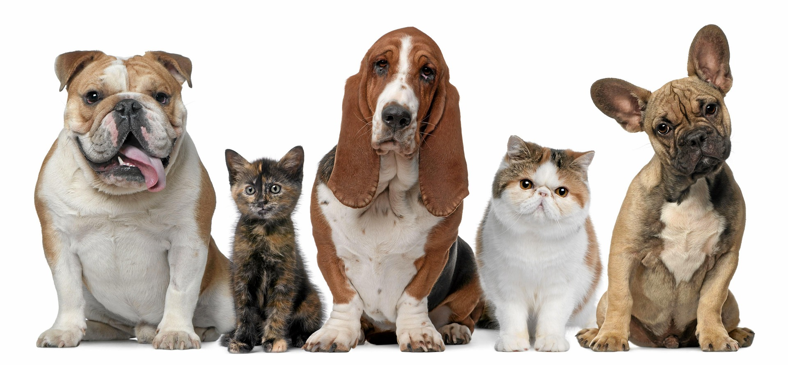

🩺 Experiencia
Profesionales capacitados para cuidar la salud de tu mascota.
Atención veterinaria profesional con amor, compromiso y cuidado personalizado.
Agendar citaEn VetCare CR trabajamos para brindar atención veterinaria de calidad, enfocándonos en la salud y bienestar de cada mascota que llega a nuestra clínica.
Nuestro equipo está comprometido con ofrecer un servicio profesional, responsable y lleno de cariño para perros, gatos y otras mascotas.
Profesionales capacitados para cuidar la salud de tu mascota.
Tratamos cada mascota como parte importante de la familia.
Servicios adaptados a las necesidades de cada paciente.
Ofrecemos atención veterinaria integral para cuidar la salud y bienestar de tu mascota.
Evaluaciones médicas profesionales para detectar y prevenir problemas de salud.
Protección preventiva mediante vacunas necesarias para cada etapa de vida.
Control de parásitos internos y externos para mantener mascotas saludables.
Servicios de higiene y cuidado estético para perros y gatos.
Procedimientos quirúrgicos con atención profesional y seguimiento.
Atención oportuna ante situaciones que requieren cuidado inmediato.
Brindamos atención profesional con un enfoque responsable y personalizado para cada mascota.
Contamos con personal preparado para brindar atención veterinaria de calidad.
Cada mascota recibe atención según sus necesidades y condición.
Trabajamos con compromiso para ofrecer soluciones oportunas a nuestros clientes.
Conoce nuestras instalaciones, profesionales y algunos momentos de atención a nuestros pacientes.



Estamos listos para cuidar la salud y bienestar de tu mascota.
Santa Cruz, Guanacaste, Costa Rica
+506 0000-0000
contacto@vetcarecr.com
Lunes a sábado: 8:00 a.m. - 6:00 p.m.